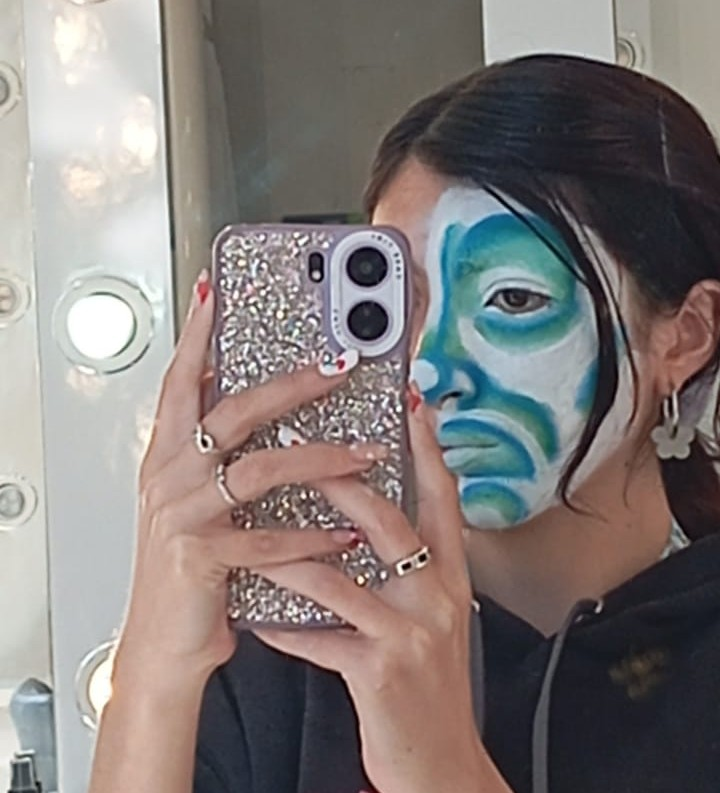
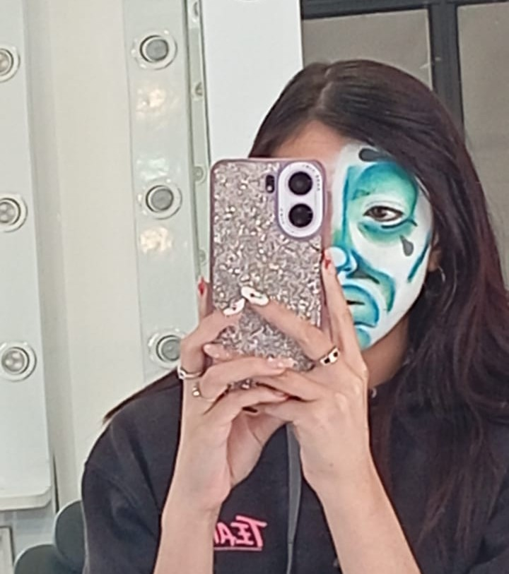

Maquillaje-Arlequin



En el maquillaje para obras de teatro, cada personaje cobra vida a través de los colores, las formas y las emociones que transmitimos en el rostro. El arlequín, por ejemplo, no es solo un diseño vibrante; detrás de sus tonos intensos hay una historia que contar. Sus colores relucen en escena y, a la vez, reflejan una dualidad: pueden transmitir dolor, alegría o tristeza, según la interpretación. Cada trazo y cada detalle son parte de una narrativa visual que conecta al público con la esencia del personaje, haciendo que cada actuación sea única e inolvidable.